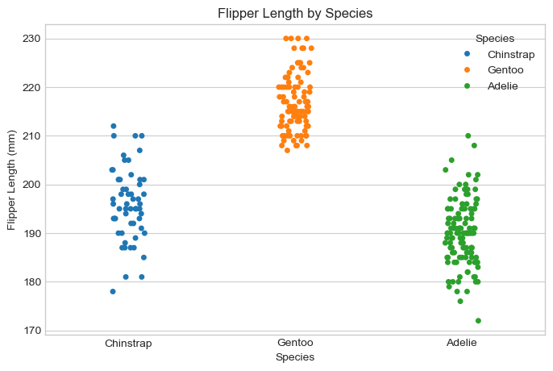
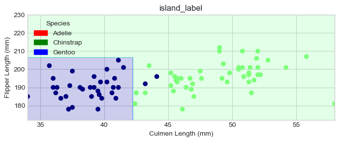

---
title: Blog 1: Classifying Palmer Penquins
author: Ryan Mauney
date: '2024-02-18'
image: "image.jpg"
description: "Building a Machine Learning model to identify Palmer Penquins with 100% accuracy based on the 3 indicator variables."
format: html
---
from source import Perceptron
---------------------------------------------------------------------------ImportError Traceback (most recent call last)
Cell In[1], line 1----> 1fromsourceimport Perceptron
ImportError: cannot import name 'Perceptron' from 'source' (c:\Users\miceo\OneDrive\Desktop\Desktop\CS_451\Nibsquatch.github.io\posts\example-blog-post\source.py)
p = Perceptron()
---------------------------------------------------------------------------NameError Traceback (most recent call last)
Cell In[2], line 1----> 1 p =Perceptron()
NameError: name 'Perceptron' is not defined
Loading neccesary packages and prepping the Palmer Penquins data.
import warningsimport numpy as npfrom matplotlib import pyplot as pltimport pandas as pdimport seaborn as snsnp.set_printoptions(precision =3)plt.style.use('seaborn-v0_8-whitegrid')url ="https://raw.githubusercontent.com/PhilChodrow/ml-notes/main/data/palmer-penguins/train.csv"df = pd.read_csv(url)# Shorten the species namedf["Species"] = df["Species"].str.split().str.get(0)# filter our data so it only contains the variables we will look at first# look at the first 5 entries to determine variables that seem as if they could have a correlationdf.head()
studyName
Sample Number
Species
Region
Island
Stage
Individual ID
Clutch Completion
Date Egg
Culmen Length (mm)
Culmen Depth (mm)
Flipper Length (mm)
Body Mass (g)
Sex
Delta 15 N (o/oo)
Delta 13 C (o/oo)
Comments
0
PAL0809
31
Chinstrap
Anvers
Dream
Adult, 1 Egg Stage
N63A1
Yes
11/24/08
40.9
16.6
187.0
3200.0
FEMALE
9.08458
-24.54903
NaN
1
PAL0809
41
Chinstrap
Anvers
Dream
Adult, 1 Egg Stage
N74A1
Yes
11/24/08
49.0
19.5
210.0
3950.0
MALE
9.53262
-24.66867
NaN
2
PAL0708
4
Gentoo
Anvers
Biscoe
Adult, 1 Egg Stage
N32A2
Yes
11/27/07
50.0
15.2
218.0
5700.0
MALE
8.25540
-25.40075
NaN
3
PAL0708
15
Gentoo
Anvers
Biscoe
Adult, 1 Egg Stage
N38A1
Yes
12/3/07
45.8
14.6
210.0
4200.0
FEMALE
7.79958
-25.62618
NaN
4
PAL0809
34
Chinstrap
Anvers
Dream
Adult, 1 Egg Stage
N65A2
Yes
11/24/08
51.0
18.8
203.0
4100.0
MALE
9.23196
-24.17282
NaN
df.groupby(["Island", "Species"]).size()
Island Species
Biscoe Adelie 33
Gentoo 98
Dream Adelie 45
Chinstrap 57
Torgersen Adelie 42
dtype: int64
Torgersen Island is home exclusively to Adelie penguins, while Dream Island is the only habitat for Chinstrap penguins, despite an almost equal distribution of Adelie and Chinstrap there. Biscoe Island hosts primarily Gentoo penguins, making up 74.8% of its population. While Adelie penguins are found on all islands, each island has a degree of exclusivity in species distribution. This is a semi promising indicator.
# explore the species groups by flipper lengthplt.figure(figsize=(8, 5))sns.stripplot(x ="Species", y ="Flipper Length (mm)", data = df, hue ="Species", legend ="brief")plt.title("Flipper Length by Species")plt.show()

Grouping by species and analyzing flipper length clearly distinguishes Gentoo penguins, as they generally have longer flippers than Chinstrap and Adelie penguins. However, flipper length is not a reliable identifier between Chinstrap and Adelie penguins, as their ranges overlap significantly.
# explore the species groups by culmen lengthplt.figure(figsize=(8, 5))sns.stripplot(x ="Species", y ="Culmen Length (mm)", data = df, hue ="Species", legend ="brief")plt.title("Culmen Length by Species")plt.show()
While there is not a clear distinction between Culmen Length for Chinstrap and Gentoo penquins, there is a clear separation the two species from Adelie. This means that Culmen Length could be used as an indicator for Chinstrap penquins, in combination with island identity.
Next we will define a method to properly give integer values to species as well as other categorical variables and apply this method to our data.
C:\Users\miceo\AppData\Local\Temp\ipykernel_45480\1322769177.py:14: SettingWithCopyWarning:
A value is trying to be set on a copy of a slice from a DataFrame.
Try using .loc[row_indexer,col_indexer] = value instead
See the caveats in the documentation: https://pandas.pydata.org/pandas-docs/stable/user_guide/indexing.html#returning-a-view-versus-a-copy
df["species_label"] = species_encoder.fit_transform(df["Species"])
C:\Users\miceo\AppData\Local\Temp\ipykernel_45480\1322769177.py:15: SettingWithCopyWarning:
A value is trying to be set on a copy of a slice from a DataFrame.
Try using .loc[row_indexer,col_indexer] = value instead
See the caveats in the documentation: https://pandas.pydata.org/pandas-docs/stable/user_guide/indexing.html#returning-a-view-versus-a-copy
df["island_label"] = island_encoder.fit_transform(df["Island"])
Now to split our data into training and testing data
from sklearn.model_selection import train_test_splitdf_train, df_test = train_test_split(full_train, test_size =.2)# Visualize our Training Datasns.scatterplot(data = df_train, x ="Culmen Length (mm)", y ="Flipper Length (mm)", hue ="Species", style ="Island")
Gentoo penquins cluster very distinguishably in the upper right, whereas Chainstrap and Adelie penquins become harder to distinguish, especially as their island regions mix more. While a linear model may well, other models such as SVM may work better. A linear regression will be fitted first.
Plot the decision regions for the model against the training data.
from matplotlib.patches import Patchdef plot_regions(model, X, y): x0 = X[X.columns[0]] x1 = X[X.columns[1]] qual_features = X.columns[2:] fig, axarr = plt.subplots(1, len(qual_features), figsize = (7, 3))# Ensure axarr is always a list-like objectiflen(qual_features) ==1: axarr = [axarr]# create a grid grid_x = np.linspace(x0.min(),x0.max(),501) grid_y = np.linspace(x1.min(),x1.max(),501) xx, yy = np.meshgrid(grid_x, grid_y) XX = xx.ravel() YY = yy.ravel()for i inrange(len(qual_features)): XY = pd.DataFrame({ X.columns[0] : XX, X.columns[1] : YY })for j in qual_features: XY[j] =0 XY[qual_features[i]] =1 p = model.predict(XY) p = p.reshape(xx.shape)# use contour plot to visualize the predictions axarr[i].contourf(xx, yy, p, cmap ="jet", alpha =0.2, vmin =0, vmax =2) ix = X[qual_features[i]] ==1# plot the data axarr[i].scatter(x0[ix], x1[ix], c = y[ix], cmap ="jet", vmin =0, vmax =2) axarr[i].set(xlabel = X.columns[0], ylabel = X.columns[1], title = qual_features[i]) patches = []for color, spec inzip(["red", "green", "blue"], ["Adelie", "Chinstrap", "Gentoo"]): patches.append(Patch(color = color, label = spec)) plt.legend(title ="Species", handles = patches, loc ="best") plt.tight_layout() plt.show()plot_regions(LR, X_train[predictor_cols], y_train)# Check the model accuracy against the testing dataprint(LR.score(X_test, y_test))
0.9636363636363636
Linear regression with the current parameters did not result in a 100% testing accuracy. Lets try switching out our qualitative parameter to clutch completion.
C:\Users\miceo\AppData\Local\Temp\ipykernel_45480\1614244165.py:11: SettingWithCopyWarning:
A value is trying to be set on a copy of a slice from a DataFrame.
Try using .loc[row_indexer,col_indexer] = value instead
See the caveats in the documentation: https://pandas.pydata.org/pandas-docs/stable/user_guide/indexing.html#returning-a-view-versus-a-copy
df["species_label"] = species_encoder.fit_transform(df["Species"])
C:\Users\miceo\AppData\Local\Temp\ipykernel_45480\1614244165.py:12: SettingWithCopyWarning:
A value is trying to be set on a copy of a slice from a DataFrame.
Try using .loc[row_indexer,col_indexer] = value instead
See the caveats in the documentation: https://pandas.pydata.org/pandas-docs/stable/user_guide/indexing.html#returning-a-view-versus-a-copy
df["clutch_label"] = clutch_encoder.fit_transform(df["Clutch Completion"])
Let’s visualize our new training data.
df_train2, df_test2 = train_test_split(full_train2, test_size =.2)# Visualize our Training Datasns.scatterplot(data = df_train2, x ="Culmen Length (mm)", y ="Flipper Length (mm)", hue ="Species", style ="Clutch Completion")
Time to fit the new Linear Regression Model. My guess is that this model may actually be less accurate than the model taking into account island, as clutch completion seems to be mixed more evenly between penquin species compared to origin island which had some degree of specification.
Check the new training accuracy and cross validate. Then look at the decision region for the new model.
print(LR2.score(X_train2, y_train2))cv_scores_LR2 = cross_val_score(LR2, X_train2, y_train2, cv =5)print(cv_scores_LR2)plot_regions(LR2, X_train2[predictor_cols2], y_train2)# Check the model accuracy against the testing dataprint(LR2.score(X_test2, y_test2))
Unfortunately, changing the qualitative indicator for this model actually decreased the testing accuracty of the model. Perhaps we should go back to the original qualitative indicator and change the quanitative indicators. Lets look at each quantitative indicator next to each other.
# explore the species groups by culmen lengthfig, axes = plt.subplots(1, 3, figsize=(12, 5))sns.stripplot(x ="Species", y ="Culmen Length (mm)", data = df, hue ="Species", ax = axes[0], dodge =True)axes[0].set_title("Culmen Length by Species")sns.stripplot(x ="Species", y ="Culmen Depth (mm)", data = df, hue ="Species", ax = axes[1], dodge =True, legend =False)axes[1].set_title("Culmen Depth by Species")sns.stripplot(x ="Species", y ="Flipper Length (mm)", data = df, hue ="Species", ax = axes[2], dodge =True, legend =False)axes[2].set_title("Flipper Length by Species")plt.tight_layout()plt.show()
Looking at these plots side by side Culmen Depth and Flipper Length have almost inverse plots, perhaps these two in combination with Island would serve as a better model than with Culmen Length and Flipper Length.
C:\Users\miceo\AppData\Local\Temp\ipykernel_45480\464828516.py:11: SettingWithCopyWarning:
A value is trying to be set on a copy of a slice from a DataFrame.
Try using .loc[row_indexer,col_indexer] = value instead
See the caveats in the documentation: https://pandas.pydata.org/pandas-docs/stable/user_guide/indexing.html#returning-a-view-versus-a-copy
df["species_label"] = species_encoder.fit_transform(df["Species"])
C:\Users\miceo\AppData\Local\Temp\ipykernel_45480\464828516.py:12: SettingWithCopyWarning:
A value is trying to be set on a copy of a slice from a DataFrame.
Try using .loc[row_indexer,col_indexer] = value instead
See the caveats in the documentation: https://pandas.pydata.org/pandas-docs/stable/user_guide/indexing.html#returning-a-view-versus-a-copy
df["island_label"] = island_encoder.fit_transform(df["Island"])
Visualize our third batch of training data
df_train3, df_test3 = train_test_split(full_train3, test_size =.2)# Visualize our Training Datasns.scatterplot(data = df_train3, x ="Culmen Depth (mm)", y ="Flipper Length (mm)", hue ="Species", style ="Island")
Visually there is a large separation between Gentoo and the other species, however there is almost no separation between Chinstrap and Adelie. I’ll try a Linear Regression but a different ML model may be more appropriate. The separation of Gentoo is promising however.
Check the new training accuracy and cross validate. Then look at the decision region for the new model.
print(LR3.score(X_train3, y_train3))cv_scores_LR3 = cross_val_score(LR3, X_train3, y_train3, cv =5)print(cv_scores_LR3)plot_regions(LR3, X_train3[predictor_cols3], y_train3)# Check the model accuracy against the testing dataprint(LR3.score(X_test3, y_test3))
Linear Regression clearly does not work for these parameters, however the clear separation between Gentoo is promising and other ML should be considered
from sklearn.svm import SVC # support vector classifierSVM = SVC(gamma =1)SVM.fit(X_train3, y_train3)print(SVM.score(X_train3, y_train3))cv_scores_SVM = cross_val_score(SVM, X_train3, y_train3, cv =5)print(cv_scores_LR3)plot_regions(SVM, X_train3[predictor_cols3], y_train3)# Check the model accuracy against the testing dataprint(SVM.score(X_test3, y_test3))
Lets try a DecisionTree Classifier with out two datasets involving Island as our qualitative indicator as the SVM had a far worse accuracy for this dataset.
from sklearn.tree import DecisionTreeClassifierreg1_1 = DecisionTreeClassifier(max_depth =1)reg1_5 = DecisionTreeClassifier(max_depth =5)reg2_1 = DecisionTreeClassifier(max_depth =1)reg2_5 = DecisionTreeClassifier(max_depth =5)# time to fit a decision tree classifier with depth 1 and 5 to both our datasets with Island as the qualitative indicatorreg1_1.fit(X_train, y_train)reg1_5.fit(X_train, y_train)reg2_1.fit(X_train3, y_train3)reg2_5.fit(X_train3, y_train3)# Check the training accuracy and cross validate each modelprint("DecisionTreeClassifier with depth = 1 has a training accuracy of: "+str(reg1_1.score(X_train, y_train)) +" for dataset 1")cv_reg1_1 = cross_val_score(reg1_1, X_train, y_train, cv =5)print("And a cross validation of: "+str(cv_reg1_1))print("DecisionTreeClassifier with depth = 5 has a training accuracy of: "+str(reg1_5.score(X_train, y_train)) +" for dataset 1")cv_reg1_5 = cross_val_score(reg1_5, X_train, y_train, cv =5)print("And a cross validation of: "+str(cv_reg1_5))print("DecisionTreeClassifier with depth = 1 has a training accuracy of: "+str(reg2_1.score(X_train3, y_train3)) +" for dataset 3")cv_reg2_1 = cross_val_score(reg2_1, X_train3, y_train3, cv =5)print("And a cross validation of: "+str(cv_reg2_1))print("DecisionTreeClassifier with depth = 5 has a training accuracy of: "+str(reg2_5.score(X_train3, y_train3)) +" for dataset 3")cv_reg2_5 = cross_val_score(reg2_5, X_train3, y_train3, cv =5)print("And a cross validation of: "+str(cv_reg2_5))
DecisionTreeClassifier with depth = 1 has a training accuracy of: 0.7844036697247706 for dataset 1
And a cross validation of: [0.795 0.773 0.773 0.767 0.791]
DecisionTreeClassifier with depth = 5 has a training accuracy of: 0.9908256880733946 for dataset 1
And a cross validation of: [0.932 0.977 0.932 0.977 1. ]
DecisionTreeClassifier with depth = 1 has a training accuracy of: 0.7798165137614679 for dataset 3
And a cross validation of: [0.795 0.75 0.727 0.791 0.791]
DecisionTreeClassifier with depth = 5 has a training accuracy of: 0.908256880733945 for dataset 3
And a cross validation of: [0.909 0.818 0.886 0.744 0.837]
Based on training accuracy and cross validation model 2 (dataset 1 with depth = 5) seems to be the most promising. Lets check the decision region and accuracy against the testing data.
plot_regions(reg1_5, X_train[predictor_cols], y_train)# Check the model accuracy against the testing dataprint(reg1_5.score(X_test, y_test))

0.9454545454545454
Perhaps this model was overfit to the data. Lets examine the model with the second highest training accuracy (model 4: dataset 3 with depth = 5).
plot_regions(reg2_5, X_train3[predictor_cols3], y_train3)# Check the model accuracy against the testing dataprint(reg2_5.score(X_test3, y_test3))